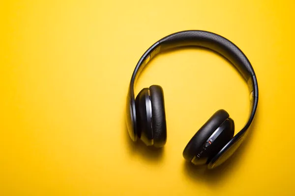
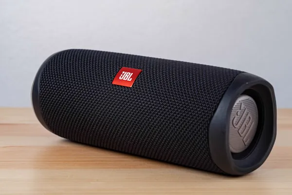
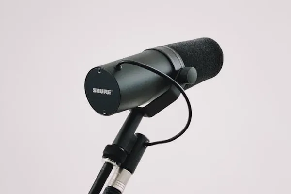

Bluetooth 5.3 · 30 h · Cancelación de ruido
Auriculares inalámbricos
Cancelación activa de ruido para aislarte en el colectivo o en la biblioteca. Treinta horas de batería y carga rápida por USB-C.
$ 135.000
Auriculares, parlantes y micrófonos para escuchar y grabar.

Bluetooth 5.3 · 30 h · Cancelación de ruido
Cancelación activa de ruido para aislarte en el colectivo o en la biblioteca. Treinta horas de batería y carga rápida por USB-C.

20 W · Resistente al agua · 12 h
Resistente al agua y al polvo, así que aguanta la pileta y la playa sin drama. Veinte watts que llenan una habitación sin distorsionar.

Condensador · Cardioide · Plug and play
Se conecta por USB y funciona sin placa de sonido ni configuración. El patrón cardioide toma tu voz y deja afuera el ruido de los costados.